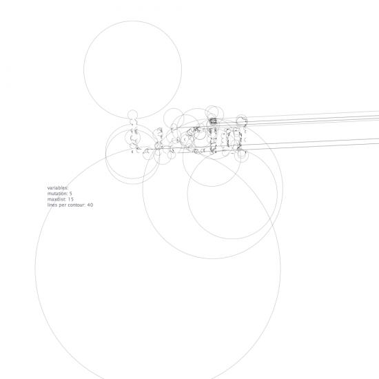

Posted by Tom M. on Aug 21, 2008
Here's the code:
A large chunk of it is taken from the Cornu example so I can take no credit for 99% of this
# This example uses the points method to connect letters together. # It actually draws lines between points of each letter contour # that are a certain distance from eachother. size(1000, 1000) try: cornu = ximport("cornu") except: cornu = ximport("__init__") reload(cornu) tweaks = 1 # This utility method calculates the length between points. # It's just a standard Pythagoras algorithm. def calc_length(x1, y1, x2, y2): from math import sqrt, pow return sqrt(pow(x2-x1, 2) + pow(y2-y1, 2)) # First, create a textpath that we will use further on. font("Lucida Sans", 125) align(CENTER) path = textpath("Lucid", 0, 400, width=WIDTH) # Select a color for the lines. nofill() stroke(0.2) strokewidth(0.3) # The mutation adds a little extra randomness to each calculated point. # Increase it to make the lines deviate more from the template path. #mutation = random(0.0, 1.0) mutation = 5 # The maximum distance between two points. Increase this to get a more # "spidery" effect. #maxdist = random(2, 125.0) maxdist = 15 # Amount of lines for each contour. #lines_per_contour = random(2, 100) lines_per_contour =40 # A path has a contours property that returns each seperate contours. # Note that "holes" in a letter (such as a P or D) are contours as well. for contour in path.contours: # Get a list of 100 points on each contour, properly divided amongst # the path. This is different from the elements of the path, because # the points are evenly distributed along the path. path_points = list(contour.points(100)) # We want a certain amount of lines. for i in range(lines_per_contour): # Choose a point on the path pt1 = choice(path_points) # To find the second point, we use a "brute-force" approach. # We randomly select a point on the path, and see if its distance # from the first point is smaller than the maximum allowed distance. # If it is, the point is selected; otherwise, we try another point. # Note that this might loop infinitely for very short (or negative) distances. # Use Command-Period to break out of the loop. # Initialize the current length to "infinity", which means it won't get selected. length = float("inf") while length > maxdist: pt2 = choice(path_points) length = calc_length(pt1.x, pt1.y, pt2.x, pt2.y) # Once we've found a second point, draw it. Use the mutation parameter to add a bit # of randomness to the position of the line. c1 = (pt1.x)*0.001 c2 = (pt1.y)*0.001 d1 = (pt2.x)*0.001 d2 = (pt2.y)*0.001 cornu.drawpath([(c1,c2), (d1,d2)], close=False, tweaks=20, points=False) #line(pt1.x + random(-mutation, mutation), pt1.y + random(-mutation, mutation), \ # pt2.x + random(-mutation, mutation), pt2.y + random(-mutation, mutation)) print c1, pt1.x, c2, pt1.y, d1, pt2.x, d2, pt2.y font("Lucida Sans", 12) fill(0.5, 0.5, 0.55) align(LEFT) leftalign=WIDTH/8 text("variables:", leftalign, 500, width=WIDTH) mutation = str(mutation) maxdist = str(maxdist) lines_per_contour = str(lines_per_contour) text("mutation: " + mutation , leftalign, 515, width=WIDTH) text("maxdist: " + maxdist, leftalign, 530, width=WIDTH) text("lines per contour: " + lines_per_contour, leftalign, 545, width=WIDTH)

Rudimentary type experiments
Posted by Tom M. on Aug 22, 2008
Hello!
I'm a complete a complete novice to Nodebox, but I've been playing around with combining some of the available libraries to generate some interesting typographic interpretations.
In this example I've used the Cornu library combined with the Spider example to create an unusual typographic interpretation of the word "lucid". The idea was to make a pseudo-network style appearance.
The code is probably awful and rudimentary but it does what I want it to. Any suggestions would be welcome!